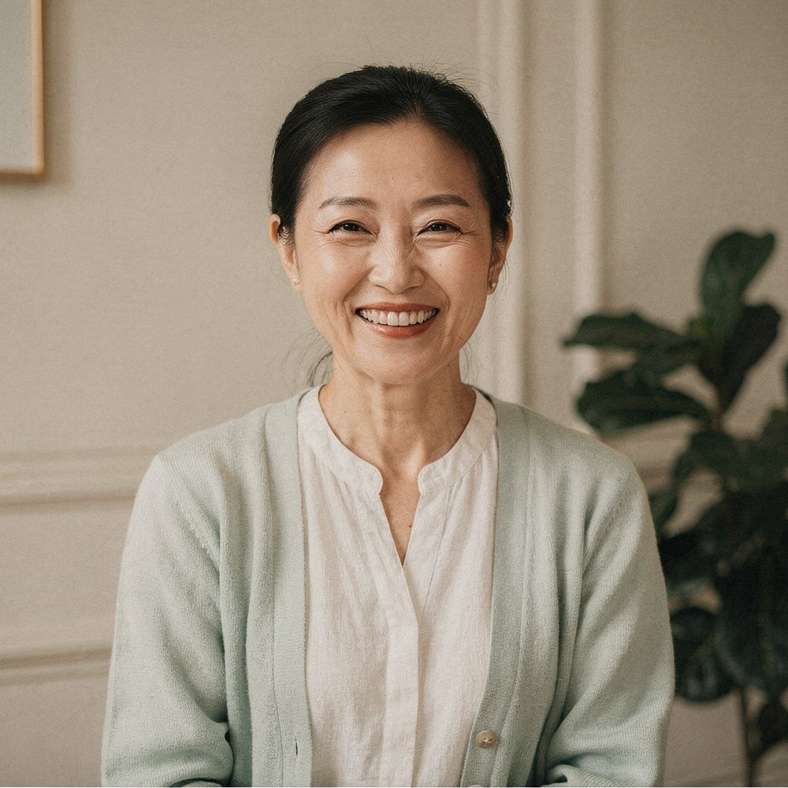

2025 — 2026上海 · 住家照护
陪伴初为父母的家庭
协助宝宝日常清洁、整理用品、安排家庭餐食，并逐步与家人分享照料方法，做好离户交接。
一位月嫂，也是一位用心的生活搭档

用心照护10个春夏秋冬细致一点，耐心一点。
把每个家庭，都放在心上。
母婴照护经验
陪伴过的家庭
按需安排服务周期
一餐一饭，一份记录，一次细致的整理。
用看得见的日常，认识我的工作。
每个家庭都有自己的节奏。我会先听听您的生活习惯与照护想法，再一起商量安排；把需要留意的情况记清楚，遇到健康问题及时建议寻求医护人员帮助。
比起一句“有经验”，
我更愿意聊聊做过的事。
协助宝宝日常清洁、整理用品、安排家庭餐食，并逐步与家人分享照料方法，做好离户交接。
与多代同住的家庭保持日常沟通，按饮食习惯调整菜单，让照护安排清楚、分工明确。
从用物清洁到餐食准备，坚持记录日常情况，逐渐建立细致、温和、有条理的工作习惯。
告诉我您的城市、预产期和照护想法，
我们一起聊聊适合您家的安排。